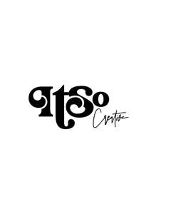

Trade Mark Journal No.2025/022 30 May 2025
UK00004188556 14 April 2025 (16,26,31,35,41,44)
Mark 1
Mark 2

- Class 16
- Stationery; Paper stationery; Party stationery; Printed paper invitations; Laser cut paper; Laser print paper; Laser printing paper.
- Class 26
- Bouquets of artificial flowers; Silk flowers; Wreaths of artificial flowers; Artificial flowers; Flowers (Artificial -); Artificial flower wreaths; Artificial fruit, flowers and vegetables; Artificial flowers of paper; Artificial flowers of textile; Artificial flower arrangements; Artificial flowers of plastics; Artificial garlands and wreaths.
- Class 31
- Flowers; Bouquets of dried flowers; Bouquets of fresh flowers; Dried flowers; Fresh flowers; Garlands of natural flowers; Flowers, dried, for decoration; Dried flowers for decoration; Wreaths of natural flowers; Flowers (Wreaths of natural -); Roses [plants]; Edible flowers, fresh; Fresh edible flowers; Roses; Dried flower wreaths; Cut flowers; Natural plants and flowers; Flowers, natural; Flowers [natural]; Natural flowers; Preserved flowers; Living flowers; Live flowers; Live flower wreaths; Arrangements of natural flowers; Flower bulbs; Bulbs (Flower -); Flower seeds; Dried flower arrangements; Fresh flower arrangements; Preserved flowers for decoration; Arrangements of dried flowers for decorative purposes; Floral decorations [dried]; Wreaths of dried herbs for decoration; Floral decorations [fresh]; Foliage plants; Plants, dried, for decoration; Dried plants for decoration; Live flower arrangements; Dried corsages; Fruit plants; Dried herbs for decoration; Herbs, dried, for decoration; Dried boutonnieres; Fruit shrubs; Grasses [plants]; Floral decorations [natural]; Fresh plants; Dried plants; Gift baskets of fresh fruits.
- Class 35
- Wholesale services relating to flowers; Advertising and marketing services; Business advertising services relating to franchising; On-line advertising and marketing services; Advertising services for the promotion of e-commerce; Advertising, promotional and marketing services; Advertising particularly services for the promotion of goods; Retail services in relation to stationery supplies; Wholesale services in relation to stationery supplies; Retail services connected with stationery.
- Class 41
- Educational services relating to business.
- Class 44
- Floristry; Flower arranging; Flower arrangement design services; Floral design; Floral design services; Floral arrangement design services.
ITSO Creative Ltd